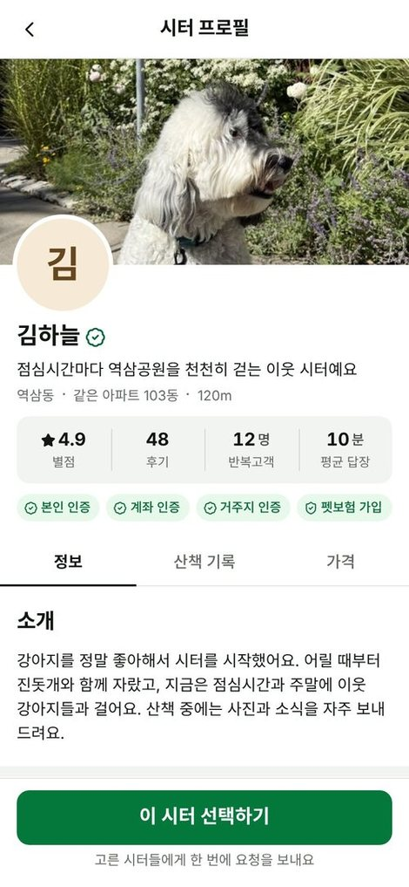
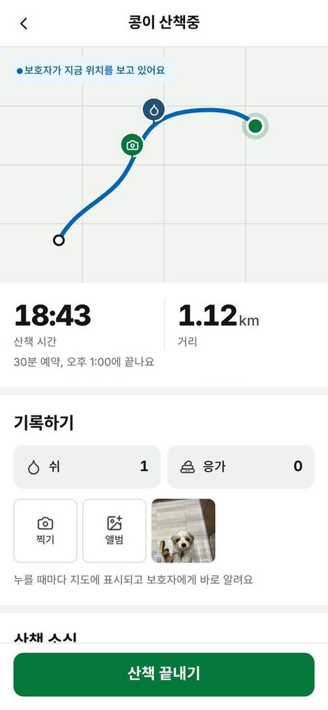
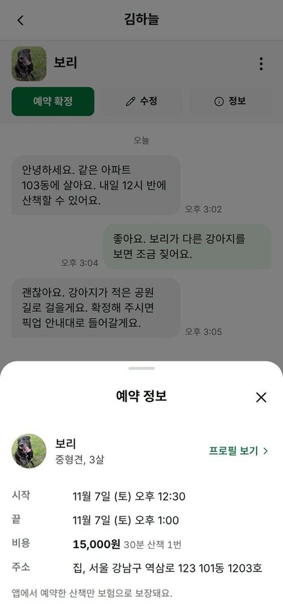
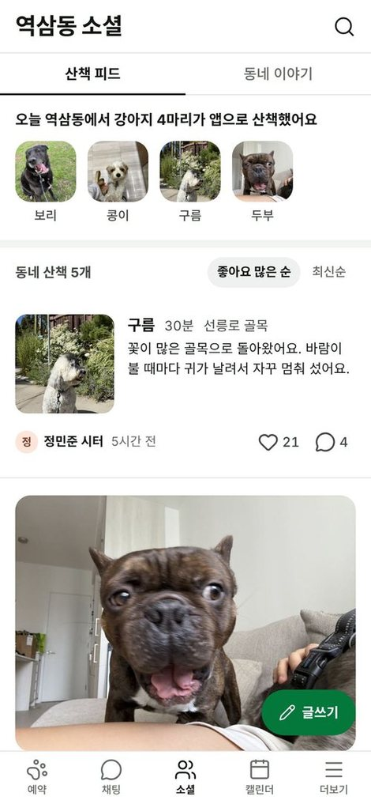
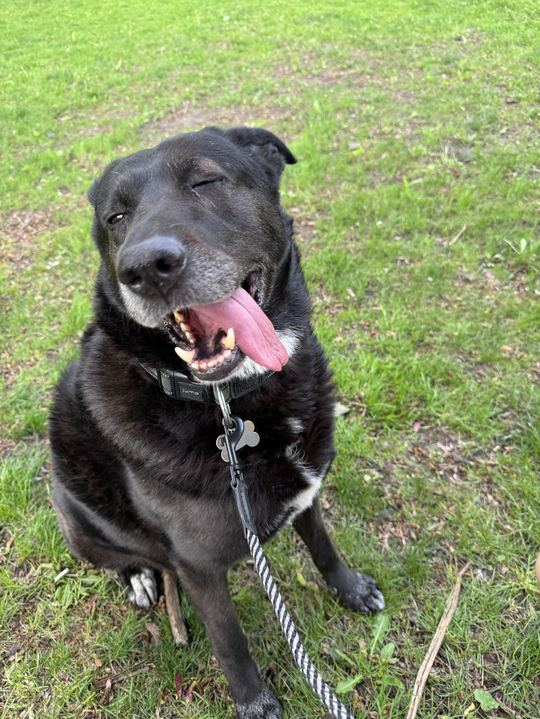

같은 아파트 시터를 표시해요
거주지 인증을 한 시터는 보호자와 같은 아파트에 살면 이름 옆에 같은 아파트라고 떠요.

거주지 인증을 한 시터는 보호자와 같은 아파트에 살면 이름 옆에 같은 아파트라고 떠요.

시터가 쉬, 응가, 사진을 누르면 지도에 그 자리가 찍히고 보호자에게 바로 알림이 가요.

호출 번호와 비밀번호는 확정된 시터에게만, 산책하는 날에만 열려요. 앱에서 예약한 산책은 보험으로 보장해요.

소셜 피드에는 사진과 걸은 시간만 올라가요. 생활 반경이 드러나는 지도는 보호자만 봐요.

모두돌봄은 회사가 시터를 고용하는 산책 대행이 아니에요. 같은 동네에 사는 사람이 점심시간이나 수업 없는 날에 이웃의 강아지와 걷고, 가격과 일할 시간은 시터가 정해요.

아직 출시 전이에요. 서울의 한 동네에서 먼저 시작하고, 출시 알림을 신청하면 우리 동네가 열릴 때 알려 드려요.
지금은 산책만 해요. 집에서 맡아 돌보는 일은 위탁관리업 등록이 필요해서, 등록 여부가 정해질 때까지 열지 않아요.
본인 인증, 계좌 인증, 거주지 인증을 거쳐요. 범죄 기록은 법으로 요구할 수 없어서 받지 않아요.
시터마다 30분 가격을 직접 정해요. 시터를 고르는 화면에서 가격을 보고 비교할 수 있어요.
우리 동네에서 모두돌봄이 열리면 이메일로 한 번 알려 드려요.
